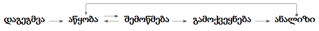

ჩეთბოტის დაგეგმვის პროცესი
ჩეთბოტის დაგეგმვის პროცესი

ჩეთბოტის დაგეგმვის ეტაპები:
ჩეთბოტის აწყობამდე მნიშვნელოვანი საფეხურია მისი დაგეგმვა. შემოთავაზებული კითხვარი გაგიმარტივებს ბოტის აწყობის პროცესს. ჩეთბოტის ასაწყობად დაგჭირდება:
- პრობლემის / მიზნის ანალიზი რომელსაც ბოტის მეშვეობით გადაჭრი.
განსაზღვრე, როგორ გადაჭრის დასმულ ამოცანას ჩეთბოტი. რა როლს ასრულებს ადამიანი მსგავს შემთხვევაში?
მაგალითისთვის:
- დახმარება პროდუქტის არჩევისას
- სერვისზე ინფორმაციის მიწოდება
- სიახლეების გაცნობა
- მეთოდი რომლითაც დასახულ მიზანს მიაღწევ:
მას შემდეგ რაც ჩეთბოტს ფუნქციას შეურჩევ, დაფიქრდი, რა ფორმით ააწყობს ის მოსაუბრესთან პრაქტიკულ კომუნიკაციას.
- არსებობის შემთხვევაში, იპოვე დასმული ამოცანის გადაჭრის ალტერნატიული გზა. ინფორმაციის გაცემის რა პროცესს გაამარტივებს ჩეთბოტის გამოყენება?
- ალტერნატიული გზის არ არსებობის შემთხვევაში, რა ფორმით ისურვებდი შენთვის მოცემული პრობლემის გადაწყვეტას?
შემოთავაზებული საფეხურები დაგეხმარება ბოტის ფუნქციონალის სასაუბრო ენად დალაგებაში:
- ბოტის ფუნქციონალის შეჯამება
- ბოტის სასაუბრო ენის განსაზღვრა
- ბოტის სასაუბრო ენა შედგება სასაუბრო ფრაზების ერთობლიობისგან.
- სასაუბრო ფრაზების მეშვეობით ეწყობა დიალოგი მოსაუბრესა და ჩეტბოტს შორის.
სასაუბრო ტოტების ერთობლიობა ქმნის ჩეთბოტის სასაუბრო ენას. ეფექტური სასაუბრო ენის შესაქმნელად, ანალიზისას დააკვირდი:
- წყვეტს თუ არა ბოტი მოსაუბრის მიერ დასმულ ამოცანას მინიმალური საფეხურის გავლით.
- წყვეტს თუ არა ბოტი მოსაუბრის ამოცანას უკეთ / უფრო სწრაფად / ეფექტურად / მარტივად ვიდრე ალტერნატიული მეთოდი.
- არის თუ არა ბოტი ინტუიტიური:
- მომხმარებელს მარტივად შეუძლია ჩეთბოტთან საუბარი.
- ბოტის პასუხები ეხმარება მომხმარებელს საუბრის გაგრძელებაში.
- სასაუბრო ფრაზები ქმნიან ლოგიკურ სასაუბრო ტოტს.
სასაუბრო ტოტების დამატებისას ჩეთბოტთან რეგულარული საუბარი დაგეხმარება მისი სასაუბრო ენის შეფასებაში.
Copyright © 2019 by AnimaChatbotics. All Rights Reserved.